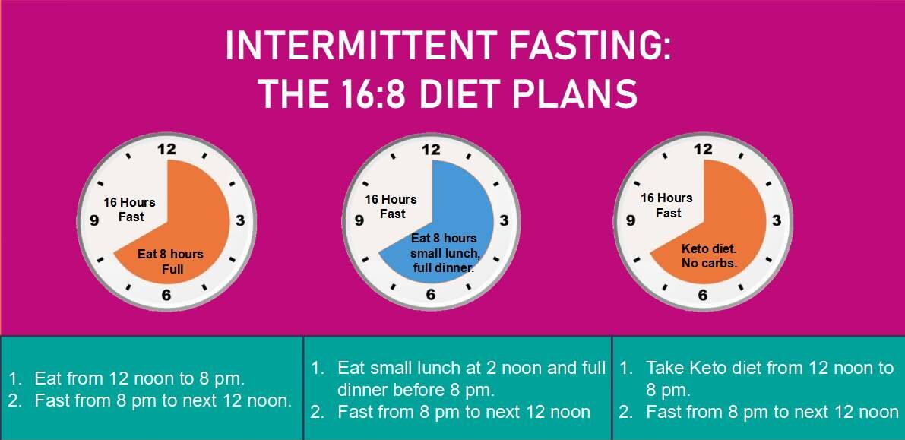
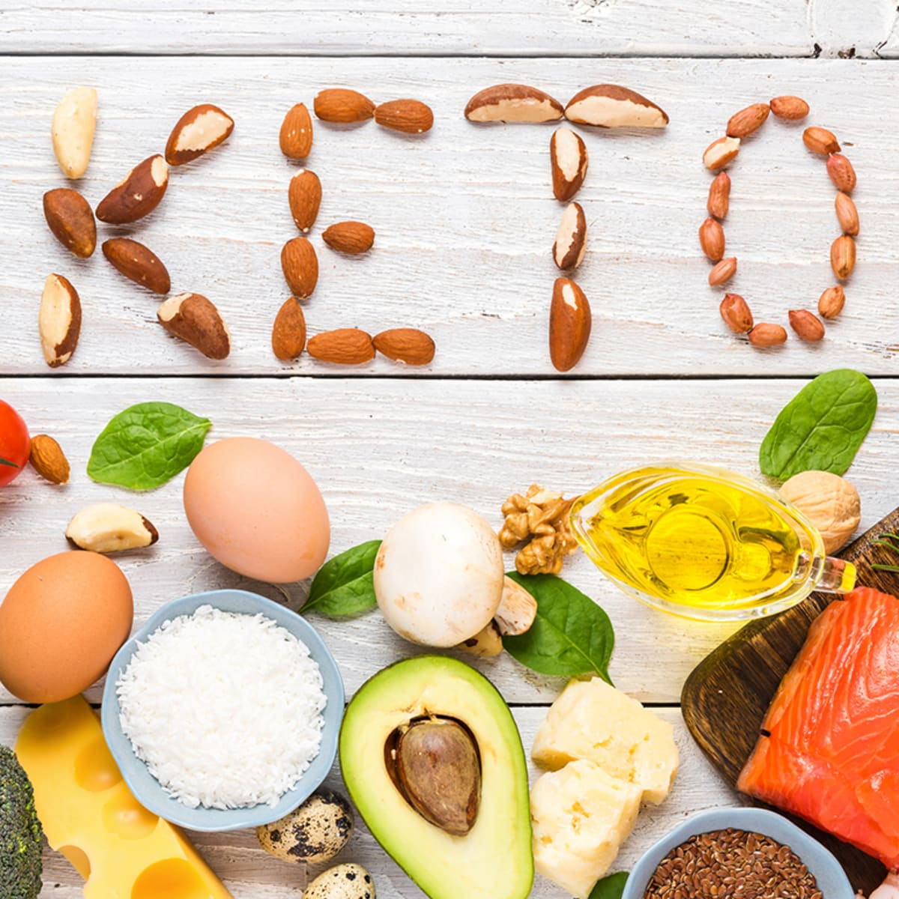
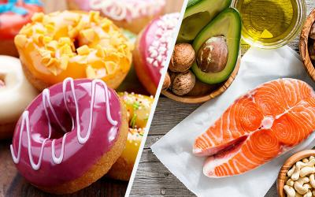
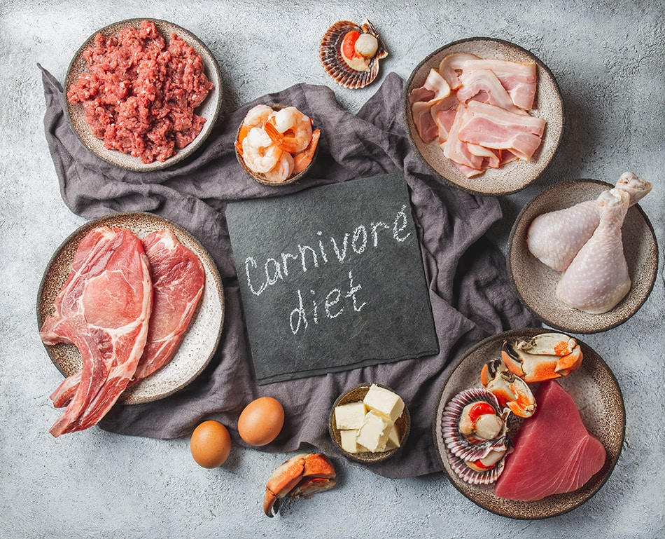
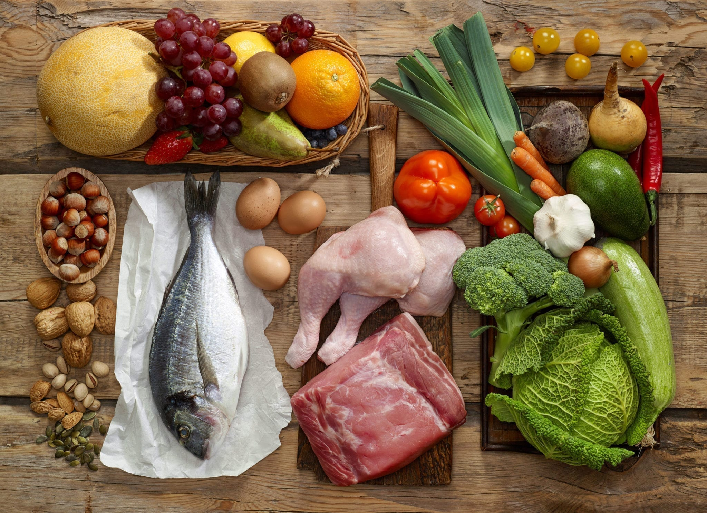

Different types of diets
What are you currently consuming?
Intermittent Fasting
 I'm guessing you're already familiar with what intermittent fasting is, For those who are not it is an eating pattern where you refrain from eating calories during a time period, it can also be known as restricted feeding, There are different approaches to intermittent fasting, with the most popular being an 8:16 split, meaning you consume your calories in an eight-hour eating window and fast for the other 16 hours of the day. You can also do a 10:16, 16:10, or even 6:20 eating:fasting split. Some extremists go as far as squeezing a whole day’s worth of calories into a single hour.
Mediterranean Diet
 As the name suggests, the Mediterranean Diet is inspired by the eating habits of the people in the Mediterranean Sea,
Those countries include Greece, Italy, Spain, and more, These countries have some of the longest life expecatancies in the world,
Their diet is rich in heart-healthy foods such as vegetables, fruits, fish, grains, olive oil and nuts. Red meat consumption is
kept to a minimum while dairy intake is moderate and consists of yogurt and cheese.
As the name suggests, the Mediterranean Diet is inspired by the eating habits of the people in the Mediterranean Sea,
Those countries include Greece, Italy, Spain, and more, These countries have some of the longest life expecatancies in the world,
Their diet is rich in heart-healthy foods such as vegetables, fruits, fish, grains, olive oil and nuts. Red meat consumption is
kept to a minimum while dairy intake is moderate and consists of yogurt and cheese.
Keto Diet
 These recent years, the Keto diet has arguably one of the most discussed and debated diets, Ketogenic meaning keto for short is a diet that prioritizes fat(65-75% of your daily calories) with moderate protein consumption (20-30%) and very few carbs(5%), It was designed to keep the body in a near-constate state of ketosis, a metabolic state where the body creates ketones from fat to use as energy instead of sugar from carbs.
If It Fits Your Macros
 Just a planned eating where you try to hit your daily macros intake (calories, carbs, proteins, etc) It is much more flexible and efficient since you can track your macros meaning you can hit whatever goal you want, if you want to gain or lose weight this is a very good diet, for tracking your macros, you can use an app like MyFitnessPal.
Veganism
 Avoid animal-based products and only eat plant-based products.
Avoid animal-based products and only eat plant-based products.
Carnivore Diet
 Avoid plant-based products and only eat animal-based products.Paleo Diet
 Also known as the "Caveman Diet", could be considered a cousin of the carnivore diet, in addition to eationg meat you're also eating fish, vegetables, fruits, nuts, and seeds, but avoiding any grains, dairy, beans, etc.Magna Phasellus
Ipsum Dolor
Vehicula fermentum ligula at pretium. Suspendisse semper iaculis eros, eu aliquam iaculis. Phasellus ultrices diam sit amet orci lacinia sed consequat.